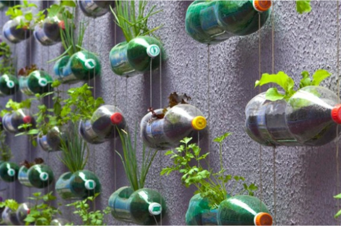

Cómo iniciar tu propia huerta durante la cuarentena y qué sembrar
La idea de tener una huerta en la casa ha tomado fuerza, desde hace un par de años, gracias a los beneficios que ofrece la agricultura urbana. El consumo consciente y la alimentación orgánica son corrientes que también la han potenciado.🍃
Hierbabuena, cilantro, tomillo, romero, menta, orégano, albahaca; son algunas de las hierbas aromáticas, medicinales y condimentarias que puedes sembrar en el espacio que elijas de tu hogar. 🏡
Sin embargo, vegetales y hortalizas como tomates, zanahorias, espinacas y lechugas también se cultivan siguiendo pautas específicas. Así, tener productos de la canasta familiar en tu jardín, balcón, patio o terraza en realidad es muy sencillo y trae muchos beneficios. 🌱